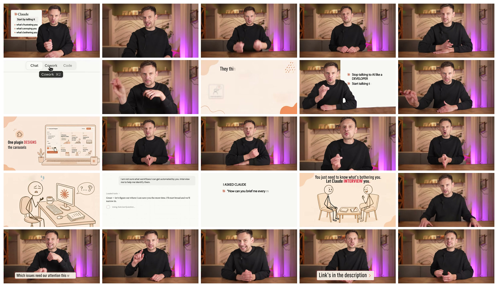
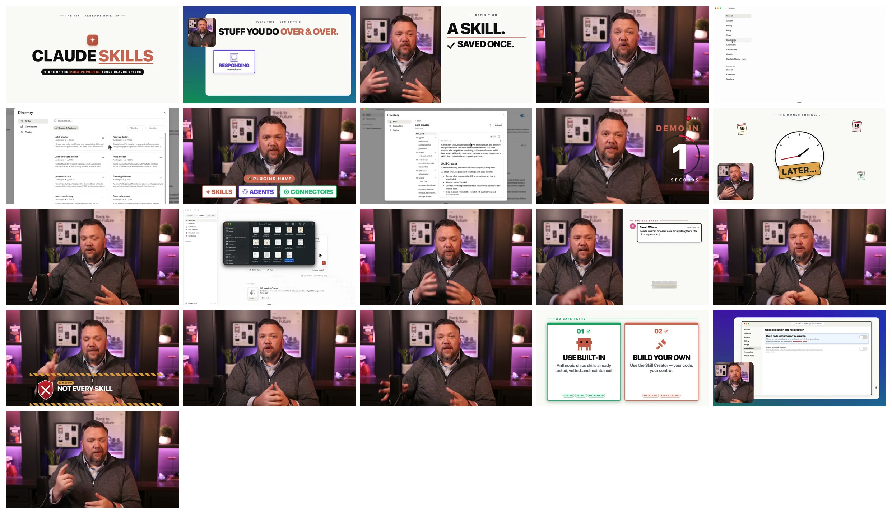

低素材 AI 工作型 Explainer 拉片
这次看两条更接近“工作型低素材 explainer”的英文案例：一个讲 Claude Cowork，一个讲 Claude Skills。重点不是评价内容对错，而是判断它们的画面组织方式、素材密度、可复刻性，以及对 HyperFrames 模板化生产的启发。
先给结论
更像“工作方法观点视频”
Stop Prompting AI. Do This Instead (Claude Cowork)
真人口播占比很高，视觉上靠少量 Claude UI、简单插画和大字卡片补充观点。它的强项是“人味”和说服力，不是纯画面可复刻性。
适合学选题、话术和观点包装；不适合作为低成本纯 MG 模板的第一参考。
更像“教程型低素材模板”
Claude Skills Explained Simply (Master in 7 Minutes)
结构更清楚：标题卡、问题卡、定义卡、录屏、风险提示、选择卡。画面大多可以用 HTML/CSS/SVG 和少量截屏复刻。
更值得拆成 HyperFrames 模板：talking-head 可选，核心画面可独立成立。
案例 01：Stop Prompting AI. Do This Instead
来源：Darius Lukas，YouTube，约 8:20。粗抽帧：每 20 秒一张。

核心观点不要从“写提示词”开始，而是让 Claude 先访谈你，找出真正值得自动化或交给 AI 的工作。
画面骨架真人中景口播为主；少量 UI 截屏、Claude 卡片、手绘风插画、大字标题作为解释节点。
素材密度低到中。没有大量外部资料，但依赖真人镜头和室内摄影质感。
节奏特点长段口播推进，视觉节点间隔较远。画面变化主要用来强调概念，不承担完整叙事。
粗结构
| 段落 | 内容功能 | 视觉方式 | 可借鉴点 |
|---|---|---|---|
| 开场 | 直接反共识：不要从 prompts 开始。 | 真人 + Claude 卡片，左侧列出“frustrating / annoying / bothering”。 | 开场不是解释功能，而是先给观众一个行为纠偏。 |
| 概念区分 | Claude chat 和 Claude Cowork 的差异。 | 界面局部截图 + 标签切换。 | 把抽象差异变成 UI 状态差异，适合用 HyperFrames 模拟。 |
| 方法展开 | 三步/三招使用 Claude Cowork。 | 真人口播穿插大字卡片和简笔插画。 | 每一个方法点只需要一个非常简单的视觉锚点，不需要复杂场景。 |
| 演示与例子 | 让 Claude 访谈你、找出可自动化的工作。 | 白底对话界面、Claude 输出、任务感插画。 | “让 AI 先问你问题”这个动作，非常适合做成一组聊天卡片动画。 |
| 收束 | 强调链接、行动建议、产品入口。 | 真人 + 底部提示条。 | 低素材视频不一定要每秒有新画面，结尾可以靠口播完成。 |
7/10观点包装
5/10画面可复刻
6/10低素材程度
6/10HyperFrames 性价比
案例 02：Claude Skills Explained Simply
来源：Tristen O'Brien，YouTube，约 6:59。粗抽帧：每 20 秒一张。

核心观点重复输入同一套指令，是在做多余工作；Claude Skills 可以把这类规则保存起来，需要时自动调用。
画面骨架标题卡、问题卡、定义卡、录屏演示、警示条、对比卡。每类画面都可以模板化。
素材密度低。主要素材是真人、Claude UI 截图、少量图标和几张卡片。
节奏特点几乎每个信息段都有明确的视觉状态：问题、定义、步骤、提醒、选择。
粗结构
| 段落 | 内容功能 | 视觉方式 | 可借鉴点 |
|---|---|---|---|
| 标题钩子 | “Claude Skills” + 强调它是内置强工具。 | 干净白底，大标题，红色强调词，短标签。 | 非常适合 HyperFrames 做开场：一个中心标题 + 一个视觉印章。 |
| 痛点 | 你反复做同样的事，反复输入同样的要求。 | 白板式卡片：重复任务、响应客户、报价、写邮件。 | 痛点要先画成“重复”，再解释 skill。不是一上来讲定义。 |
| 定义 | Skill 是保存一次、之后反复使用的一套说明。 | 大字 Definition / A Skill / Saved Once。 | 定义页很克制，只有一两个关键词，字幕和旁白补充细节。 |
| 操作演示 | 设置、目录、安装、创建 skill。 | 真实 Claude UI 截屏 + 鼠标/菜单动作。 | 录屏不必多，但要落到具体 UI，建立可信度。 |
| 风险提示 | 不要随便装任何 skill，注意数据风险。 | 黑黄警示条、红叉、强提示。 | 风险段要换视觉语气，形成节奏断点。 |
| 路径选择 | 用内置 skill 或自己创建。 | 两张对比卡：Use Built-in / Build Your Own。 | 结论最好变成选择题，而不是一串说明。 |
7/10观点包装
8/10画面可复刻
8/10低素材程度
8/10HyperFrames 性价比
对我们最有用的结论
| 问题 | 结论 | 落到我们的视频怎么用 |
|---|---|---|
| 是不是每句话都要动画？ | 不用。好的低素材 explainer 是按“信息节点”动，不是按句子动。 | 一句话只负责过渡时，画面可以不变；当概念、动作、关系变化时再动。 |
| 低素材视频靠什么不无聊？ | 靠“画面类型切换”：标题卡、问题卡、定义卡、示意图、真实 UI、对比卡、警示卡。 | 先建立 5-6 种可复用画面模板，而不是每个 beat 单独设计。 |
| 为什么第二条更适合我们？ | 它的视觉不是依赖摄影，而是依赖版式和状态。版式和状态更适合 HTML/CSS/SVG 复刻。 | Loop Engineering 样片可以采用：大标题钩子 -> 重复劳动图示 -> 定义卡 -> 具体 UI/流程 -> 风险提示。 |
| 真人口播是否必要？ | 不是必要，但小窗真人能增加可信度。纯 faceless 也能做，只是需要更强的视觉节奏。 | 如果不露脸，就要用更明确的“任务卡片、循环箭头、状态标签、UI 截图”替代人物存在感。 |